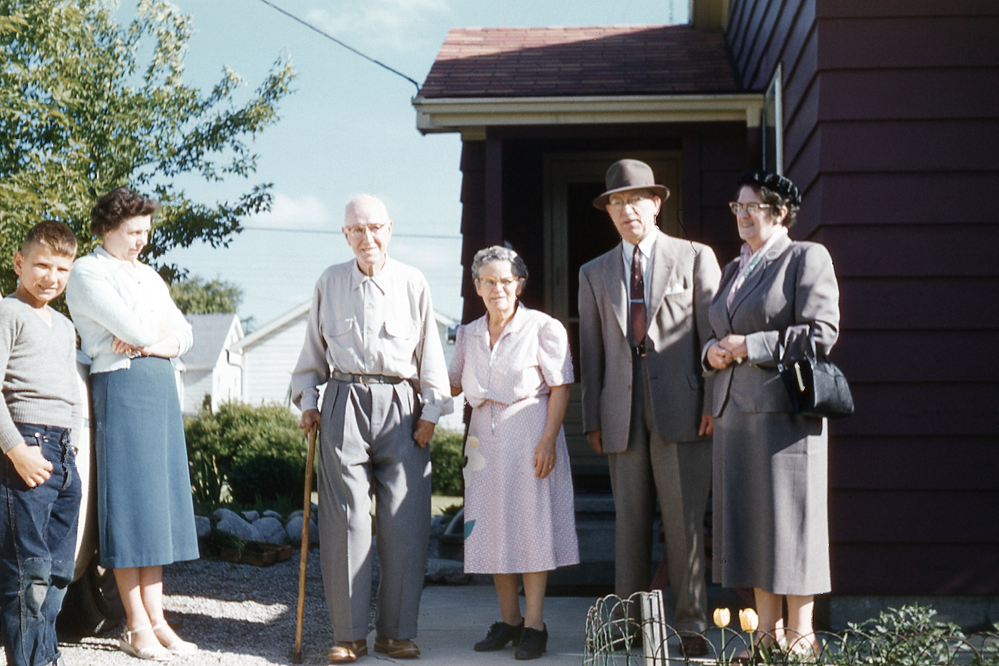

Family Pictures
← Back to Who Am IA collection of historical family photographs spanning three generations.

The Kids
Location: 850 Hotham Street, Esquimalt (Naden), BC
Date: Circa 1955
Left to Right:
- Nancy Elizabeth
- James Allen
- Judith Ellen
The Parents
Location: Qualicum Beach, BC
Date: Circa 1955
Names:
- Peter James Bates
- Gwenyth Irene Bates

The Grandparents & Family
Location: 683 Brant Street, Woodstock, Ontario
Date: Circa 1962
Left to Right:
- Jimmy (young James)
- Edna Wilson
- Malcolm & Susan Allen
- Frederick & Lucille Knapp